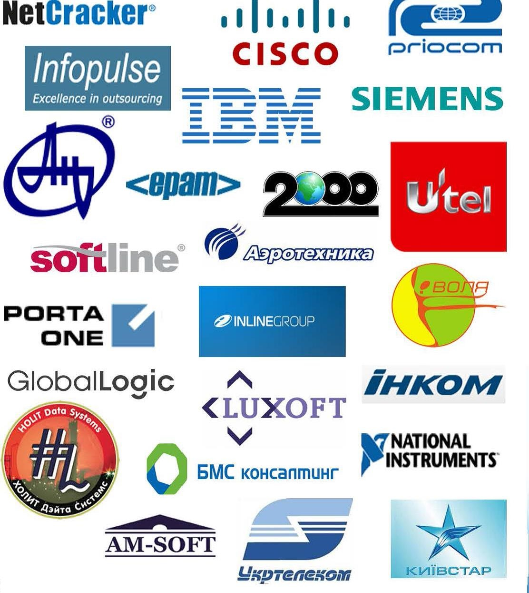

Про кафедру
Кафедра автоматики та управління в технічних системах (АУТС) є однією з базових кафедр Міністерства освіти і науки України в галузі інформаційних технологій. На кафедрі працює висококваліфікований науково-педагогічний персонал, який поєднує досвід та молодість. Серед наших викладачів: 3 професори доктори наук; 14 доцентів, к.т.н.; 1 ст. викладач, к.т.н.; 8 ст. викладачів та 5 молодих асистентів. Кафедра АУТС готує:
бакалаврів та магістрів за спеціальностями:
«Інформаційні системи та технології» (126), спеціалізація
«Комп’ютеризовані системи управління»;
«Інженерія програмного забезпечення» (121), спеціалізація
«Програмне забезпечення інформаційно-комунікаційних систем»
Концепція підготовки професіоналів галузі інформаційних технологій спеціалізації «Комп’ютеризовані системи управління» на кафедрі «Автоматики та управління в технічних системах» ґрунтується на двох позиціях. По-перше, це знання методологій і технологій проектування та реалізації інформаційних систем; процесів і стандартів розроблення інформаційних систем; сучасного ІТ-середовища; по-друге, поглиблені знання у сфері сучасних платформ створення комп’ютеризованих систем управління.
На теперішній час інформаційні технології широко впроваджуються у сфери послуг та бізнес процесів, але майбутнє пов’язано зі створенням та реалізацією високоавтоматизованих систем управління та керування процесами виготовлення продукції.
Саме тому спеціалізація «Комп’ютеризовані системи управління» націлена на розвиток здатності фахівців інтегрувати програмні, технічні та інформаційні компоненти систем на організаційному (бізнесовому) рівні та розробляти комп’ютеризоване керування об’єктами на операційному та процесному (технологічному) рівнях.
Зважаючи на універсальний підхід до підготовки фахівців, можна стверджувати, що це гарантує випускникам конкурентноздатність, мобільність та затребуваність на світовому ринку праці.
Спеціальність «Інженерія програмного забезпечення» – спеціальність, спрямована на розробку програмного забезпечення для інформаційних систем різного призначення з використанням сучасних підходів та технологій проектування, імплементації, тестування, розгортання та супроводу, яке відповідає вимогам надійності та ефективності. Сьогодні фахівці з інженерії програмного забезпечення є найбільш затребуваними на ринку праці серед фахівців з інформаційних технологій інших напрямків, приймають участь у серйозних розробках програмного забезпечення для вітчизняних та міжнародних компаній, і мають достойну оплату своєї праці.
Спеціалізація «Програмне забезпечення інформаційно-комунікаційних систем» – спеціалізація, спрямована на вивчення програмного забезпечення інформаційно-комунікаційних систем – прикладних сервісів, програмних компонентів підтримки бізнес-процесів, засобів організації і підтримки сервіс-орієнтованих архітектур програмного забезпечення, платформних рішень для проектування, управління і розвитку ІТ-інфраструктури, засобів проектування та реалізації програмних систем різного призначення.
Випускники працюють як розробники програмно-апаратних комплексів інформаційно-комунікаційних систем, різноманітного програмного забезпечення з використанням сучасних підходів та технологій (девелопери), як спеціалісти з розроблення та підтримки сервіс-орієнтованих архітектур програмного забезпечення, проектування, управління і розвитку ІТ-інфраструктури (системні та програмні архітектори) та керівниками програмних проектів (тім-ліди).
Види навчання: денна та заочна (бюджет та контракт)
Особливістю підготовки наших випускників є глибоке вивчення найсучасніших високотехнологічних галузей науки і техніки: інфраструктури інформаційних технологій, проектування інформаційних систем, технологій розроблення програмного забезпечення, комп’ютеризованих систем управління.
Наші студенти отримують грунтовні знання з:
- програмування (алгоритмічні мови та програмування, об’єктно- орієнтоване програмування, сучасні технології програмування, системне програмування, системи баз даних, операційні системи, WEB-технології, WEB-дизайн, інтернет речей)
- математики (вища математика, дискретна математика, теорія ймовірності і матстатистика, основи штучного інтелекту, дослідження операцій та математичне програмування, тощо);
- теорії інформаційних процесів (теорія інформації і кодування, цифрова обробка сигналів та зображеннь, основи теорії інформаційних процесів, інформаційна безпека та захист інформації, системи та мережі передачі даних, аналіз, моделювання, експлуатація, моніторинг та адміністрування телекомунікаційних мереж і систем, тощо);
- комп’ютерної та мікропроцесорної техніки (архітектура комп’ютерних систем і мереж, системи розподіленних та паралельних обчислень, проектування та програмування мікропроцесорних систем, тощо);
- теорії та систем управління (теорія автоматичного керування, системний аналіз об’єктів і процесів комп’ютеризації, інтегровані корпоративні інформаційно-управляючі системи, методи оптимізації в керуванні та управлінні, тощо);
- проектування (сучасні технології проектування комп’ютерних систем управління; метрологія, стандартизація та сертифікація; інтелектуальні системи та технології; проектування, реалізація та експлуатація баз даних).
Кафедра АУТС оснащена сучасною технікою.
У 14 спеціалізованих навчальних лабораторіях та комп’ютерних класах кафедри кожен студент має можливість самостійно працювати у визначений час на сучасних персональних комп’ютерах, об’єднаних локальною обчислювальною мережею, що дозволяє йому всебічно вивчати найновіші досягнення у галузі інформаційних технологій, дає можливість працювати у мережі Internet, та використовують Wi-Fi доступ. На комп’ютерах кафедральної мережі використовується сучасне програмне забезпечення як провідних світових компаній, так і Open-Source: ОС Windows, Linux; СУБД Oracle, MSSQL Server; мови програмування C, C++, Delphi, С#, NET, Java (JavaSE, Java EE, Java ME), Turbo Assembler, Borland Builder, HTML, CSS, JavaScript, jQuery, Python; засоби MicroCAP, Electronics Worckbench, Rational Rose, Matlab, Packet Tracer, Riverbed Modeler, PCAD, OrCAD, LabVIEW, ISaGRAF, MS Office, емулятори та засоби проектування для різних мікропроцесорів та мікроконтролерів (PROTEUS, AVR STUDIO та ін.), контролерів автоматизації (MicroWIN, Step 7, WinCC, ALFA, TraceMode). Основоположна позиція кафедри полягає в тому, що без наукової роботи неможливо підготувати якісного фахівця.
В процесі навчання студенти займаються науково-дослідницькою роботою в Науково-дослідному інституті інформаційних процесів, та Навчально-науковому центрі інформаційно-комунікаційних технологій Неткрекер-НТУУ «КПІ», які створено і працють на базі кафедри.
Основні науково-технічні напрями кафедри:
- Розроблення та впровадження на реальних підприємствах методології та інструментів створення інформаційних систем;
- Розроблення та впровадження сучасних інформаційних технологій (включаючи, інтелектуальні, мобільні і інтернет-технології) для різних сфер діяльності людини;
- Розроблення теоретичних основ і технологій проектування комп’ютеризованих систем керування;
- Проектування та управління сучасними ІТ-інфраструктурами;
- Позроблення теоретичних основ і засобів систем та мереж передачі даних і телекомунікацій в управлінні;
- Розроблення методології та технологій паралельних обчислень.
За останні роки на кафедрі створені нові лабораторії:
- Телекомунікаційних та мережевих технологій, на базі якої утворені Локальна та Регіональна Академії Cisco НТУУ “КПІ”.
У 2010 році за грантом НАТО отримано комплект сучасного лабораторного обладнання CISCO для проведення занять з комп’ютерних мереж ССNР та інформаційної безпеки у мережах CCNS.
- Комп’ютеризованих систем управління технічними об’єктами і технологічними процесами на основі промислових контролерів: Siemens, Mitsubishi, Schneider, National Instruments, та інших виробників.
- Лабораторія засобів аналізу, проектування та реалізації програмних систем.
- В 2007 році на кафедрі було відкрито науково-навчальний центр “КПІ-НЕТКРЕКЕР” за сприяння компанії NetCracker, світового лідера з розробки систем операційної підтримки операторів зв’язку (OSS).
- За підтримки компанії PortaOne з 2007 року на кафедрі працює “Навчально-наукова лабораторія технологій конвергентних мереж”, де студенти вивчають теоретичні основи та поглиблюють знання у передачі голосових повідомлень
- В 2011 році на кафедрі відкрито науково-навчальний центр “КПІ-ЕРАМ” за сприяння компанії “ЕРАМ Systems”, найбільшого постачальника послуг в області розробки програмного забезпечення та прийняття рішень на території країн СНД, Центральної і Східної Європи.
- В 2011 році відкрита Науково-навчальна лабораторія засобів промислової автоматизації.
У цих лабораторіях першу половину дня студенти займаються за розкладом навчальних занять, а у другій половині дня за бажанням вивчають відповідні сучасні технології в галузі телекомунікацій, інформатики, програмного забезпечення та адміністрування, розгортання та експлуатації комп’ютерних мереж. По закінченню навчання студентам надається можливість стажування в названих компаніях з наступним працевлаштуванням. Вже сьогодні кафедра для усіх бажаючих пропонує такі додаткові курси і сертифікаційні програми:
- CCNA (Cisco Certified Network Associate), CCNP (Cisco Certified Network Professional), CCNS (Cisco Certified Network Security);
- IT Essentials-Спеціаліст з комп’ютерного Hardware та Software.
- Розробник програмного забезпечення на NET C#.
- Технології передавання мультимедіа.
- Користувач ОС Unix та адміністратор Інтернет провайдера (ISP).
- Розробник програмного забезпечення на
- Адміністратор мереж і розподілених інформаційних систем.
- Програміст PLC, SCADA.
Наші випускники працюють як спеціалісти з комп’ютеризованих систем управління, обробки даних та програмування, захисту інформації, розробки і використання мікроконтролерів різного призначення, адміністратори комп’ютерних мереж, менеджери проектів, інженери-налагоджувальники, випробувачі складного електронного, комп’ютерного та автоматичного обладнання, а також як інженери-дослідники. Кожного року 100% випускників кафедри працевлаштовуються на високооплачувану, кваліфіковану роботу
Компанії, в яких працюють наші випускники:
Наша адреса:
Київ, просп. Перемоги 37,НТУУ”КПІ”, корп. 18, кімн. 528
Тел. (044) 204-86-10, 204-92-85
Сайт: http://vk.com/actskpi http://www.facebook.com/actskpi